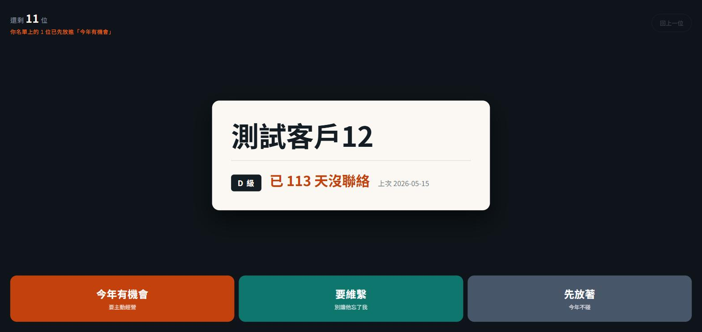

保險從業幾十個客戶，誰該主動維繫、誰先放著，光憑記憶很容易漏掉——尤其是「已經很久沒聯絡」這種該主動的訊號，需要一個隨時看得到的地方。
▶ 試玩 demo
點「看示範資料」就能滑分類，全是假客戶。
問題
這是我媽的真實工作痛點：客戶名單一多，分級跟聯絡狀況都在腦子裡，沒有整理過。
怎麼做
單檔網頁，不用裝、不用登入。上傳一份客戶名單，畫面一次顯示一位客戶——分級、已經幾天沒聯絡、上次聯絡日期，一眼看到。滑向三個桶：「今年有機會」「要維繫」「先放著」，分完就是一份可以照著做的名單。

隱私設計
資料只存在瀏覽器裡，不上傳雲端。另外寫了幾支 Python 小工具幫忙整理外部匯出的資料，但那些工具讀寫的資料夾刻意放在專案外面，程式碼本身沒有寫死任何真實客戶資料。
我的角色
一個人做的，使用者是真的在用——我媽。
案例畫面使用測試資料（「測試客戶01」～「12」這類假名），不是真實客戶資訊。
家人、朋友的小工具，也值得好好設計。寫信聊聊 →